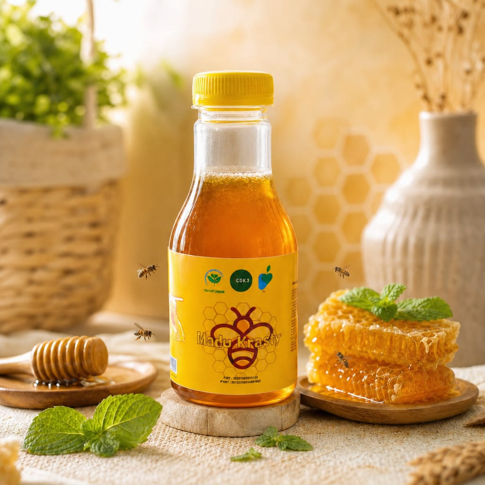
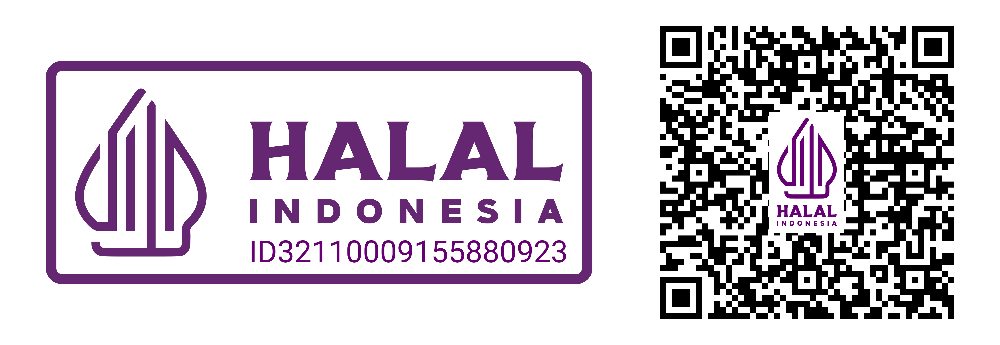

100% Murni, Sehat, dan Berkualitas Tinggi. Dipanen langsung dari peternakan lebah alami untuk menjaga keaslian dan khasiat terbaik bagi tubuh Anda.

Mengapa harus memilih Madu Krasty untuk konsumsi harian Anda?
Diproses secara higienis langsung dari sarang lebah pilihan tanpa campuran bahan kimia murni.
Murni madu murni yang dikemas tanpa tambahan pengawet, perasa, maupun pewarna buatan.
Membantu menjaga imunitas tubuh, meningkatkan stamina, dan kaya akan antioksidan alami.
Geser atau gunakan tombol untuk melihat berbagai varian madu unggulan kualitas premium
Madu murni nektar multiflora dengan rasa manis yang pas dan aroma bunga segar hutan alami.
Madu langka hasil berburu dari lebah liar (Apis dorsata) di pedalaman hutan tropis asli Indonesia.
Diproduksi oleh lebah tanpa sengat kecil (Trigona). Memiliki khasiat penyembuhan super premium.
Testimoni jujur dari pelanggan setia Madu Krasty
"Rasanya benar-benar murni dan beda dari madu supermarket biasa. Badan jadi lebih segar semenjak rutin minum Madu Krasty tiap pagi!"
"Anak-anak suka sekali dicampur ke susu hangat. Kemasannya aman, tidak mudah tumpah, dan pengirimannya cepat."
"Sangat recommended untuk yang cari madu asli. Rasa manisnya pas di tenggorokan, tidak bikin serak sama sekali."
Jaminan keamanan konsumsi dan kualitas produk yang teruji
PIRT Nomor: 2073202011129-28
Nomor: 3108230044801

Terjamin Suci dan Halal Konsumsi